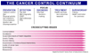

Cancer Control Continuum
The cancer control continuum has been used at least since the mid-1970s to describe the various points from cancer prevention, early detection, diagnosis, treatment, survivorship and end-of life. The continuum has changed somewhat over time. Because survivors are now a large and growing force, we have added survivorship explicitly to the continuum. Rehabilitation was once a specific phase; now it is generally considered part of treatment.
Like many other useful concepts, the continuum is over-simplified. As modern biology has changed our understanding of cancer, we now recognize that the categories are useful labels, but the processes are not so discreet. For example, we recognize that colonoscopy is both a screening test for colon cancer and a prevention strategy if polyps are found. Moreover, some research topics are crosscutting. For example, epidemiology, communication, decision-making, quality of care, dissemination, and health disparities concern us at each point on the continuum.
The cancer control continuum is a useful framework on which to view plans, progress, and priorities. It helps us identify research gaps, where we must collaborate with others to have an impact, and where more resources may be needed.
|
||||||||||||||||||||||||||||||||||||||||||||||||||||||||||||||||||||||
 Download a copy of this image as a PowerPoint slide.